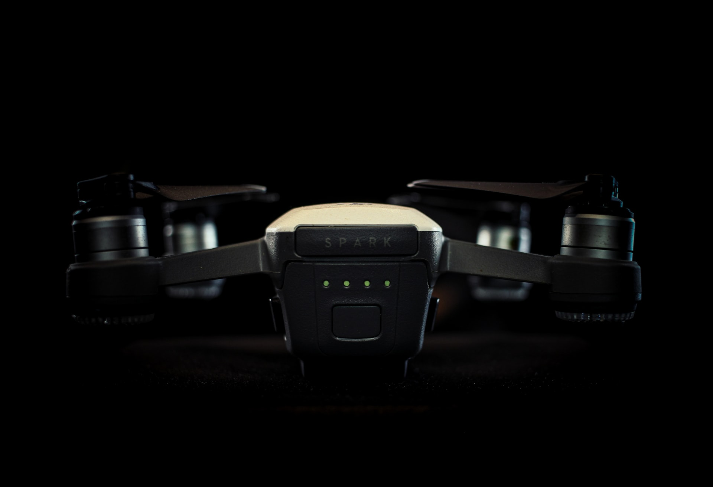

El futuro de los drones
Imagina un mundo en el que pequeños aparatos sobrevuelan de forma ordenada los edificios, transportando objetos o realizando las más diversas mediciones. Y por las aceras, drones de distintos tamaños transitan de aquí para allá, acompañando a los transeúntes con sus bultos o realizando tareas de mantenimiento. Ese mundo está todavía lejos de hacerse realidad. Pasarán años, quizá lustros, antes de que veamos drones comerciales pululando por la ciudad. ¿Es este entonces un buen momento para montar una empresa que utilice esta tecnología, antes de que lo haga todo el mundo? ¿Qué oportunidades de negocio ofrecen ahora mismo los drones a las pymes?
Quienes conocen el sector aseguran que está lleno de posibilidades, pero reconocen también que puede que se haya magnificado su potencial. “Se han generado demasiadas expectativas que no se han podido cumplir porque la regulación está entorpeciendo su progreso. Es el caso, por ejemplo, de las operaciones en núcleos urbanos”, explica Manuel Oñate, presidente de la patronal Aerpas y director general de EuroUSC España, una consultora británica especializada en drones. Buena parte de la locura desatada en los últimos años en torno a estos aparatos se le puede achacar al CEO de Amazon, Jeff Bezos. Cuando en 2013 anunció su intención de usarlos para entregar pedidos dio el pistoletazo de salida a una carrera por conquistar el reparto aéreo. Desde entonces han proliferado los vuelos de prueba de empresas de mensajería, como UPS o DHL, y de gigantes de la distribución online, como la japonesa Rakuten o la china Alibaba. La tecnología parece dar la talla, al menos para cubrir envíos en entornos controlados. Pero el legislador, también en EE UU, prefiere curarse en salud.
¿Alguien ha visto llegar un dron a su casa portando un paquete? No, ni lo verá. Al menos en la próxima década. La regulación no ha avanzado al mismo ritmo que la tecnología. “Los vuelos de drones en zonas habitadas están prohibidos, excepto si se producen dentro de un recinto cerrado particular”, aclaró Pablo Fernández Burgueño, socio de Abanlex, un despacho de abogados especializado en proyectos tecnológicos, en un taller organizado recientemente por Adigital. “Solo están permitidos los vuelos experimentales, para los que hace falta obtener permisos especiales”, abundó.
Normas del gobierno
La nueva norma que prepara el Gobierno, prometida originalmente para 2014 y que se ha ido demorando supuestamente por culpa de la parálisis política de los últimos años, no cambiará demasiado la situación. El borrador de Real Decreto “no contempla la posibilidad de autorización” de vuelos comerciales de drones, en tanto que “no existen a fecha de hoy condiciones objetivas de seguridad para su autorización”, lee la exposición de motivos. Se exigirá también a quienes quieran volar drones de más de 2 kilos de peso que avisen a las autoridades con 20 días de antelación y soliciten permisos. Pero seguirán pudiéndolo hacer solo en zonas despobladas, alejadas a entre 8 y 15 kilómetros de los aeropuertos, según el tamaño de estos, y a un máximo de 120 metros de altura. Se podrá volar drones en ciudad, pero solo si se cuenta con el consentimiento expreso de quienes puedan estar cerca del aparato, incluyendo los transeúntes. Y eso hace inviable el uso de estos aparatos más allá de entornos muy controlados, como rodajes o recintos privados.
Precisamente porque el aire está muy regulado, hay quien opina que el futuro comercial de los drones pasa por otros lares. “A quien quiera entrar en el negocio le recomendaría que no se cierre al ámbito aéreo, porque hay mucha competencia en el sector y una legislación que no le va a permitir crecer”, apunta Jaime Guillot, fundador de DroneSpain, una de las pioneras en España. “Quedan al menos 10 o 15 años hasta que veamos algo fuerte, tanto por lo restrictiva que es la regulación como porque la tecnología todavía no es 100% fiable. Los drones no son aviones, sus tripas se parecen más a las de un smartphone: pueden fallar y caerse”, añade. En Noruega y Escocia ya usan drones para desparasitar salmones de piscifactorías. También los hay en formato submarino, empleados, por ejemplo, para revisar el estado del casco de los navíos.
“Nosotros le vemos mucha salida a las aplicaciones agrícolas”, espeta Salvador Bellver, presidente de la Asociación Española de Drones y Afines (Aedron) y socio de Adrone, empresa especializada en servicios de fotografía, salvamento y fotogrametría. “El valor añadido de los drones está en los sensores que incorporan. Por ejemplo, las cámaras térmicas pueden detectar supervivientes en una catástrofe. También hay salidas en la agricultura de precisión, detectando las zonas del campo con más estrés hídrico y enviando esos datos a los tractores automáticos, que también están proliferando”, añade Bellver. Medir la calidad del aire, revisar el estado de las cosechas o de infraestructuras, calcular cuántas toneladas pesa una montaña de carbón, hacer detallados mapas 3D… Las posibilidades son extensas.
“Los drones se utilizan principalmente para captar información, que lógicamente hay que procesar”, coincide Oñate. “Ese nicho no se ha desarrollado mucho. Ahí es donde creo que hay más oportunidades de negocio: más que en la operación de drones, en procesar los datos que generan”. También tendrán trabajo las empresas que se dediquen a mejorar la emisión y recepción de señal que usan estos aparatos, a perfeccionar los sistemas de identificación electrónica de los drones o a desarrollar sistemas de intercepción de drones hostiles.
Integración
¿Llegará el día en que se integren plenamente en nuestra vida cotidiana? Por lo pronto, lo están haciendo allí donde pueden. Los almacenes de Amazon, una de las compañías que más fuerte está apostando por la automatización, recuerdan más a un hormiguero que a una nave convencional, con centenares de portapalés robóticos y brazos mecánicos moviéndose en perfecta sincronía para gestionar los stocks. La firma japonesa Komatsu presentó el año pasado unos gigantescos camiones de siete metros de altura pensados para la minería que son capaces de desplazar 230 toneladas de peso.
Pocos dudan de que el negocio de los drones siga creciendo. “La normativa que ahora se prepara abre un poco más el espectro de posibilidades, y con el tiempo cabrán más y más operaciones”, opina Bellver. “Lo importante es que la nueva ley se apruebe cuanto antes. Las inversiones están paradas a la espera de conocer la nueva regulación, y eso es malo para todos”, apunta Oñate. La tecnología, por su parte, sigue mejorando. Los drones cada vez son más fáciles de manejar. La tendencia es que ganen autonomía. “Hay algunos que ya casi no necesitan ni piloto”, asegura Guillot. “Van camino de convertirse en pequeños robots”.
¿Qué avances llegarán a los drones
China es un buen lugar para buscar respuestas, dado que es hogar de DJI, la fuerza dominante del mercado global de drones de consumo.
Como líderes de la incipiente industria desde que su modelo Phantom 1 asombró al mundo a finales del 2012, la startup de tecnología ahora dice que el futuro lo dictarán más los consumidores que los fabricantes.
“La forma seguirá a la función”, dijo Michael Perry, director de sociedades estratégicas de DJI. “Depende de cómo comience la gente a incorporarlo a su vida diaria”
DJI ya permite que los diseñadores de software creen sus propias apps para algunos drones, personalizando los dispositivos a sus necesidades. Y ha habido algunos usos bastante locos.
“Vimos un equipo de investigadores de ballena usar nuestros sistemas para volar sobre receptáculos de ballena y recolectar su mucosa para realizar análisis avanzados y determinar su salud”, dijo Perry. Los investigadores le pusieron el apodo “el bot de mocos” al dispositivo.
DJI también ha desarrollado un modelo que puede rociar plantaciones en áreas difíciles de alcanzar. Y está hablando con la red de respuesta en emergencias más grande de Europa sobre cómo usar drones en búsqueda y rescate, combate de incendios y vigilancia.
La empresa espera que sus productos, que son capaces de tomar videos y fotografías de alta calidad, se vuelvan una parte regular de la vida de las personas. Perry comparó a los drones con los smartphones como dispositivos que borran la línea entre juguete y herramienta.
“Tu smartphone personal es un poco de ambas”, dijo. “Lo usas para tomar fotos de tu familia tanto como lo usas para responder correos del trabajo. Creemos que, con el tiempo, nuestra serie Phantom funcionará de ese modo”.
Los analistas predicen que la demanda llegará al cielo. El mercado de drones comerciales podría incrementarse de cerca de 5,200 millones de dólares el año pasado a 27,100 mdd para el 2021, de acuerdo con Wintergreen Research, una firma basada en EU que estudia diferentes sectores de tecnología.
El rápido crecimiento ha atraído la atención del fabricante de cámaras GoPro que planea lanzar un dron a finales de este año con “características revolucionarias” no reveladas.
Perry dijo que DJI está enfocado en mejorar cosas como vida de la batería, evitar las colisiones y asegurarse de que los drones continúen trabajando incluso cuando dejen de funcionar los sensores GPS.
Lee: Drones ayudarán a recuperar autos robados en la CDMX
La empresa, que realiza la mayor parte de sus ventas a través de distribuidores y vendedores, también está creando una relación directa con los consumidores. DJI cuenta con dos tiendas para el consumidor, una en su ciudad natal Shenzhen al sur de China y otra en Seúl, en Corea del Sur. También anunció recientemente que rentó un espacio en el distrito comercial de Hong Kong.
“Uno de los retos principales es llevar la tecnología a manos de la gente por primera vez”, dijo Perry. “Una vez que lo tienen en sus manos, comienzan a entender todas las diferentes posibilidades”.
Andrew Stevens contribuyó al reportaje:
Hace ya unos años que los principales usos de los drones han dejado de ser exclusivamente militares. Ahora
todo el mundo puede tener su propio dron en casa, pero más allá del uso doméstico son cada vez más los
ámbitos en los que se aplican casi a diario, como la fotografía, la cartografía o la construcción.
Sin
embargo, esto es sólo el principio, en el futuro serán muchos más los sectores en los que los drones serán
fundamentales, por lo que a continuación tienes cinco sorprendentes formas en las que podremos utilizar los
drones:
Uso de drones en la Agricultura
Dentro de unos años es posible que los granjeros de todo el mundo dejen de utilizar los sistemas tradicionales para echar pesticidas y fertilizantes en sus cultivos, optando por drones que realicen dicho trabajo. No es una idea descabellada, puesto que actualmente en Japón se utilizan helicópteros dirigidos por radio control para estas funciones. El R-MAX, que es el nombre que recibe este helicóptero diseñado por Yamaha, tiene una tecnología similar a la de los drones y viene siendo utilizado por granjeros japoneses desde los años noventa, cuyo uso se ha extendido recientemente por Corea del Sur y Australia. No sólo permiten reducir el trabajo y los gastos, sino que al volar a ras del suelo son más eficientes.
Uso de drones en la Arqueología
Puede que en la arqueología los métodos tradicionales nunca dejen de utilizarse, pero tras la experiencia de un grupo de arqueólogos en el desierto de Nuevo México es probable que los drones acaben siendo una herramienta más de esta ciencia.
Los arqueólogos utilizaron un pequeño dron para descubrir las estructuras de Blue J, un asentamiento de nativos americanos con más de 1.000 años de antigüedad del que tan sólo habían obtenido información realizando excavaciones.
La cámara del dron les permitió tomar imágenes térmicas desde el aire con las que descubrieron estructuras enterradas nunca vistas. Con el uso adecuado, es posible que en el futuro los drones nos ayuden a saber más de nuestro pasado.
Drones en Labores humanistas
A pesar de los fines comerciales son el principal uso de los drones, también hay quienes ven en estos dispositivos una forma de hacer el mundo un sitio mejor.
Un grupo de investigadores de la División de Ciencias de la Salud y Tecnología de Harvard y el MIT, está trabajando en drones que puedan llevar medicamentos y vacunas a zonas remotas de países en desarrollo.
Un proyecto que cada vez está más cerca de hacerse realidad tras ganar a principios de año una beca de 100.000 dólares de la Fundación Bill y Melinda Gates. Pero no son los únicos, ya que es una idea similar a la de Matternet Inc, una compañía de tecnología que está desarrollando drones para llevar provisiones de todo tipo a lugares inaccesibles por carretera.
Expandir el acceso a Internet con ayuda de drones.
Facebook y el uso de drones: Otro de los posibles usos de los drones en el futuro sería para habilitar el acceso a Internet de las partes más remotas del planeta, algo en lo que ya trabajan Facebook y Google.
En marzo de este año la compañía de Mark Zuckerberg compró Ascenta, una empresa inglesa que desarrolla drones que funcionan con energía solar, con la que pretenden crear una red de drones, láseres y satélites para ampliar el alcance de Internet.
Por su parte Google también tiene un objetivo similar, ya que adquirió en abril Titan Aerospace, una empresa especializada en diseñar drones alimentados con energía solar que pueden volar hasta cinco años por encima de espacio aéreo de los vuelos comerciales.
Repartir comida con drones
Esta sin duda es una de las opciones más plausibles en los próximos años, sobre todo porque en los Estados Unidos una pequeña empresa ya ha intentado llevar a cabo este modelo de negocio repartiendo tacos a domicilio. El problema es que el Tacocopter, tal y como ha sido llamado de forma tan apropiada este dron, aún no ha podido realizar ningún vuelo al haber sido bloqueado por la Administración Federal de Aviación. Por el momento tendrá que esperar, ya que será en 2015 cuando se establezca de manera oficial el reglamento para el uso de drones privados y comerciales. Si se normaliza su uso y la iniciativa resulta ser un éxito, no tardaremos en ver a estos futuristas repartidores por nuestros cielos.
